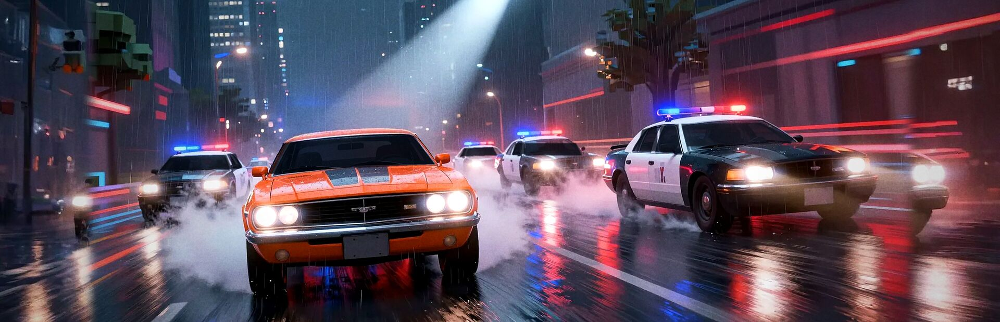

Racing
Street Takeover
A racing game about high-speed police chases, wrecked and damaged car physics, and taking on the county from the racer's seat or leading its police force in cleaning up the town.
About
Drive Fast. Pit Harder. Takeover.
Street Takeover is a racing game built around crashes that actually matter.
Hit a wall and the car takes the hit. Lose a bumper and it stays gone. Bend a wheel and you will feel it through the next corner. Skip the repair bill and take the damage into the next race. If the car gets written off, it is gone.
And the police are learning while you are learning.
Two ways to play
Play the getaway campaign and try to stay ahead of a county-wide police response that changes based on what you have already done.
Start with one cruiser on a back road. Keep causing trouble and the response gets heavier: more units, unmarked cars, spike strips, roadblocks, bridge blocks, and eventually the state detail.
Then play those same ten nights from the other side.
As police, you box runners in, call roadblocks, deploy spikes, and try to bring them home without wrecking your own cars. The two campaigns share the same roads, the same events, and the same county.
The county records you
Street Takeover tracks what happens during a run.
Cars get damaged. Police units go off the road. Routes become familiar. The more attention you attract, the more prepared the county is the next time you show up.
There is traffic and there are pedestrians, and hitting them will cost you.
A county built to drive
18 locations. 42 roads. Farms, city streets, mountain passes, coast roads, industrial docks, winter routes and back roads.
Every route can be driven in either direction, and the weather and time of day change how they handle.
Every mode covered
Run championships, time trials, drift events, demolition derbies, last-man-standing events, point-to-point sprints and special arena events.
There are 20 cars to collect, 31 cups to complete, and a garage full of things to break.
Built for your driving experience
- Persistent vehicle damage: bodywork, wheels, suspension, glass, engine and radiator damage all affect how the car drives.
- Single-player campaigns for both getaway racers and police
- Split-screen racing and online multiplayer
- Free roam, time trial, drift, duel, derby, elimination and points events
- Keyboard, gamepad and wheel support with rebindable controls
- Photo mode
- Driving school
Screenshots


Clips
-
Night run. Then the sirens start. -
Every cop in town wants this car -
Snow chase. The cop is gaining.
Follow
Clips from all four games, posted as @TrevorGamesHQ.